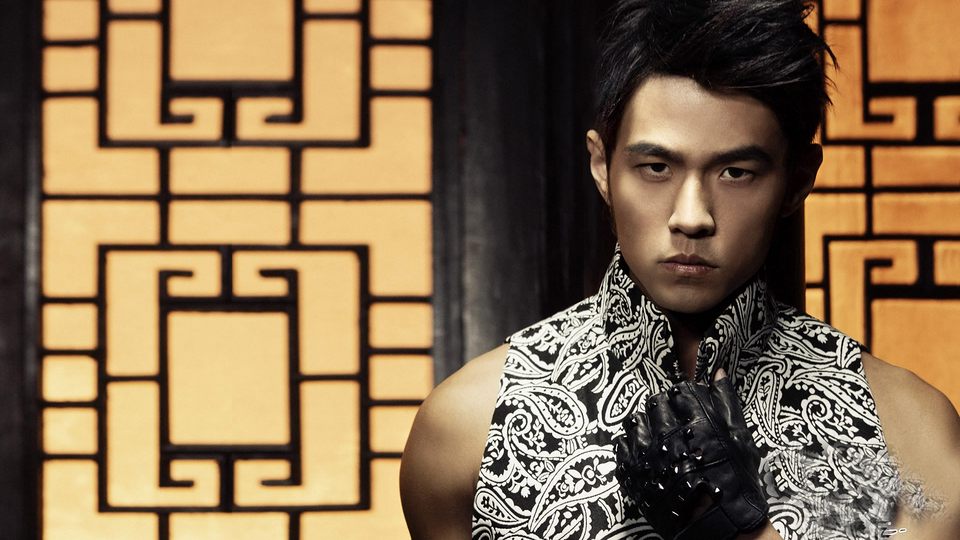

Jay Chou
引领华语乐坛潮流

图为周杰伦在《十二新作》中的《红尘客栈》MV片段
周杰伦的事迹:
- 2000 - 在杨峻荣的推荐下，周杰伦开始演唱自己创作的歌曲；11月7日，发行首张个人专辑《Jay》，并包办全部歌曲的作曲、和声编写以及监制工作；该专辑融合了R&B、hip-hop等多种音乐风格，其中主打歌曲《星晴》获得第24届十大中文金曲优秀国语歌曲金奖，而周杰伦也凭借该专辑在华语乐坛受到关注，并于次年获得第12届台湾金曲奖最佳流行音乐演唱专辑奖、第12届台湾金曲奖最佳制作人提名、第12届台湾金曲奖最佳作曲人提名。
- 2001 - 周杰伦发行了国语专辑《范特西》，他除了担任专辑的制作人外，还包办了专辑中所有歌曲的作曲；该专辑是周杰伦确立其唱片风格的作品，其中结合中西方音乐元素的主打歌《双截棍》成为饶舌歌曲的代表作之一；该专辑发行后也让周杰伦打开东南亚市场，并于次年获得第13届台湾金曲奖最佳专辑制作人奖、最佳作曲人奖、最佳流行音乐专辑奖以及香港唱片销量大奖颁奖典礼十大销量国语唱片等奖项；10月，为李玟创作融合中西方音乐元素的歌曲《刀马旦》；12月24日，发行EP《Fantasy + Plus》，收录了他在桃园巨蛋演唱会上演唱的《你比从前快乐》、《蜗牛》等歌曲；同年，获得第19届十大劲歌金曲颁奖典礼最受欢迎唱作歌星金奖、叱咤乐坛流行榜颁奖典礼叱咤乐坛生力军男歌手金奖等奖项。
- 2002 - 参演个人首部电视剧《星情花园》；2月，在新加坡新达城国际会议展览中心举行演唱会；7月，发行专辑《八度空间》，除了包办专辑中所有歌曲的作曲外，他还担任专辑的制作人；该专辑以R&B曲风的歌曲为主，并获得g-music风云榜白金音乐奖十大金碟奖、华语流行乐传媒大奖十大华语唱片奖、新加坡金曲奖大奖年度最畅销男歌手专辑等奖项 ；9月28日，在台北体育场举行“THE ONE”演唱会；12月12日至16日，在香港红磡体育馆举行5场“THE ONE”演唱会；12月25日，在美国拉斯维加斯举办“THE ONE”演唱会；同年，获得第1届MTV日本音乐录影带大奖亚洲最杰出艺人奖、第2届全球华语歌曲排行榜最受欢迎创作歌手、第9届新加坡金曲奖亚太最受推崇男歌手等奖项。
- 2003 - 成为美国《时代周刊》亚洲版的封面人物”；5月17日，在马来西亚吉隆坡默迪卡体育场举行“THE ONE”演唱会；7月16日，周杰伦专辑《叶惠美》中的主打歌曲《以父之名》在超过50家电台首播，并有8亿人收听，而主打歌首播的当日也被这些电台定为“周杰伦日”；7月31日，发行专辑《叶惠美》，他不仅包办了所有歌曲的作曲，还担任专辑的制作人和造型师 ；该专辑发行一个月在亚洲的销量突破200万张，并于次年获得第15届金曲奖最佳流行音乐演唱专辑奖、第4届全球华语歌曲排行榜颁奖典礼年度最受欢迎专辑等奖项；专辑主打歌曲《东风破》是周杰伦具有代表性的中国风作品之一，而他亦凭借这首歌曲获得第四届华语音乐传媒大奖最佳作曲人奖；9月12日，在北京工人体育场举行“THE ONE”演唱会；11月，发行EP《寻找周杰伦》；12月12日，在上海体育场举办“THE ONE”演唱会，并演唱了变奏版的《双截棍》、加长版的《爷爷泡的茶》等歌曲；同年，出演电影处女作《寻找周杰伦》。
- 2004 -首次登上央视春晚舞台，并演唱歌曲《龙拳》；3月 ，在第4届音乐风云榜中，获得台湾地区最受欢迎男歌手、年度风云大奖、年度港台及海外华人最佳制作人等奖项；8月3日，发行融合Hip-hop、R&B、古典音乐等曲风的专辑《七里香》；该专辑发行当月在亚洲的销量突破300万张，周杰伦也凭借这张专辑获得第16届世界音乐大奖中国区最畅销艺人奖，而专辑同名主打歌《七里香》则获得第27届十大中文金曲优秀流行国语歌曲奖金奖、第5届全球华语歌曲排行榜年度25大金曲等奖项；10月起，在台北、香港、洛杉矶、蒙特维尔等地举行“无与伦比世界巡回演唱会”。
- 2005 -在第11届全球华语榜中榜颁奖盛典中，获得港台最佳男歌手、港台最受欢迎男歌手、港台最佳创作歌手等奖项；4月，凭借专辑《七里香》入围第16届台湾金曲奖最佳作曲人奖、最佳国语男演唱人奖、最佳流行音乐演唱专辑奖；6月23日，首次担任男主角的电影《头文字D》上映，并凭借该片获得第42届台湾电影金马奖最佳新演员奖、第25届香港电影金像奖最佳新人奖；7月1日，在上海体育场举行“无与伦比巡回演唱会”；7月9日，在北京工人体育场举行“无与伦比巡回演唱会”；11月1日，发行专辑《十一月的萧邦》，并包办了专辑中所有歌曲的作曲以及专辑的造型设计；该专辑发行后以4.28%的销售份额获得台湾G-MUSIC年终排行榜冠军；同年，周杰伦创作的歌曲《蜗牛》被收入上海中学生爱国主义歌曲推荐目录。
- 2006 -发行EP《霍元甲》，主打歌《霍元甲》是李连杰主演的同名电影的主题曲；2月5日至6日，在日本东京举行演唱会；9月，发行专辑《依然范特西》；该专辑延续了周杰伦以往的音乐风格，并融合了中国风、RAP等曲风，其中与费玉清合唱的中国风歌曲《千里之外》获得第13届全球华语音乐榜中榜年度最佳歌曲奖、第29届十大中文金曲全国最受欢迎中文歌曲奖等奖项；该专辑发行后以5.34%的销售份额位列台湾五大唱片排行榜第一位，并获得中华音乐人交流协会年度十大优良专辑、IFPI香港唱片销量大奖最高销量国语唱片等奖项；12月，发行EP《黄金甲》；12月14日，周杰伦主演的古装动作片《满城尽带黄金甲》在中国内地上映，他在片中饰演武功超群的二王子元杰，并凭借该片获得第16届上海影评人奖最佳男演员；同年，获得世界音乐大奖中国区最畅销艺人奖。
- 2007 -首度担任导演并自导自演爱情片《不能说的秘密》，该片上映后获得第44届台湾电影金马奖年度台湾杰出电影、第27届香港电影金像奖最佳亚洲电影提名等奖项；4月，成立杰威尔音乐有限公司；5月，入围第18届台湾金曲奖最佳年度歌曲、最佳音乐录像带导演等奖项；6月，凭借单曲《霍元甲》获得第18届台湾金曲奖最佳单曲制作人奖 ；11月2日，发行专辑《我很忙》，并在专辑中首次尝试美式乡村风格；而周杰伦也于次年凭借专辑中的中国风歌曲《青花瓷》获得第19届台湾金曲奖最佳作曲人奖以及最佳年度歌曲奖；11月4日，凭借专辑《依然范特西》蝉联世界音乐大奖中国区最畅销艺人奖；11月24日，在上海八万人体育场举行演唱会，并在演唱会中模仿了VITAS的假声唱法；12月，在香港红磡体育馆举行7场“周杰伦07-08世界巡回香港站演唱会”
- 2008 -周杰伦自导自演的爱情文艺片《不能说的秘密》在韩国上映；该片上映12天票房达到4万人次；2月6日，在央视春晚上演唱歌曲《青花瓷》；同年，《青花瓷》的歌词出现在山东、江苏两省的高考试题中；2月16日，在日本武道馆连开两场演唱会，成为继邓丽君、王菲之后第三位在武道馆开唱的华人歌手；7月，凭借专辑《不能说的秘密电影原声带》获得第19届金曲奖演奏类最佳专辑制作人奖；10月15日，发行专辑《魔杰座》，该专辑融合了嘻哈、民谣等曲风，推出首周在G-MUSIC排行榜、五大唱片排行榜上获得冠军，发行一星期在亚洲的销量突破100万张；11月，凭借专辑《我很忙》第四次获得世界音乐大奖中国区最畅销艺人奖，并成为首位连续三届获得该奖项的华人歌手；同年，主演爱情喜剧片《大灌篮》，在片中饰演见义勇为、好打不平的世杰。
- 2009 -在昆山市体育中心体育场举行演唱会；6月，在第20届台湾金曲奖颁奖典礼上获得年度最佳歌曲奖、年度最佳音乐录影带、年度最佳国语男歌手三个奖项；7月，周杰伦悉尼演唱会的票房在美国公告牌上排名第二，成为该年全球单场演唱会票房收入第二名，并且打破了华人歌手在澳洲开演唱会的票房纪录 ；8月起，在佛山世纪莲体育中心体育场、沈阳奥体中心体育场等场馆举办个人巡回演唱会；12月，入选美国CNN评出的“亚洲最具影响力的25位人物”；同年主演探险片《刺陵》，在片中饰演拥有神秘力量的古城守陵人乔飞。
- 2010 -出演古装武侠片《苏乞儿》，在片中饰演冷酷、不苟言笑的武神；5月18日，发行专辑《跨时代》，并包办专辑中全部歌曲的作曲和制作；该专辑于次年获得第22届台湾金曲奖最佳国语专辑奖、中国原创音乐流行榜最优秀专辑等奖项，而周杰伦也凭借该专辑获得金曲奖最佳国语男歌手奖；6月，入选美国杂志《Fast Company》评出的“全球百大创意人物”，并且成为首位入榜的华人男歌手；8月，在一项名为“全球歌曲下载量最高歌手”（2008年年初至2010年8月10日）的调查中，周杰伦的 歌曲下载量排名全球第三；12月，编号为257248的小行星被命名为“周杰伦星”，而周杰伦也创作了以这颗小行星为题材的歌曲《爱的飞行日记》；12月30日，美国古柏蒂奴市宣布把每年的12月31日设立为周杰伦日；同年，执导科幻剧《熊猫人》，并为该剧创作了《熊猫人》、《爱情引力》等歌曲。
- 2011 -凭借动作片《青蜂侠》进军好莱坞，并入选美国电影网站Screen Crave评出的“十大最值得期待的新秀演员”；2月，与科比拍摄雪碧广告以及MV，并创作了广告主题曲《天地一斗》；4月21日，美国《时代周刊》评选了“全球年度最具影响力人物100强”，周杰伦位列第二名；5月，凭借动作片《青蜂侠》获得第20届美国MTV电影大奖最佳新人提名；5月13日，入围第22届台湾金曲奖最佳专辑制作人奖、最佳年度歌曲、最佳作曲人奖等奖项；11月11日，发行专辑《惊叹号！》；该专辑融合了重金属摇滚、嘻哈、R&B、jazz等音乐风格，并首次引入电子舞曲；同年，在洛杉矶、吉隆坡、高雄等地举行“超时代世界巡回演唱会”。
- 2012 -位列福布斯中国名人榜第一名；9月22日，在新加坡F1赛道举办演唱会，成为首位在F1演出的华人歌手；12月28日，发行专辑《十二新作》；该专辑包括了中国风、RAP、蓝调、R&B、Jazz等曲风，主打歌曲《红尘客栈》获得第13届全球华语歌曲排行榜二十大金曲、第36届香港十大中文金曲优秀流行国语歌曲银奖等奖项；同年，主演枪战动作电影《逆战》，在片中饰演对错分明、具有强烈正义感的国际警务人员万飞 。
- 2013 -在上海奔驰文化中心举行 “魔天伦世界巡回演唱会”；5月22日，入围第24届台湾金曲奖最佳国语专辑奖、最佳国语男歌手、最佳专辑制作人奖；6月1日，为动画电影《十万个冷笑话》中的角色太乙真人配音；6月22日，在成都市体育中心体育场举行演唱会；7月11日，自导自演的爱情片《天台爱情》上映，该片还被选为纽约亚洲电影节闭幕影片；9月6日至8日，在台北小巨蛋举行3场“魔天伦演唱会”。
- 2014 -在悉尼、贵阳、上海、吉隆坡等地举行“魔天伦世界巡回演唱会”；5月，位列福布斯中国名人榜第3名；11月，在动作片《惊天魔盗团2》中饰演魔术道具店的老板Li；12月10日，发行首张个人数字音乐专辑《哎呦，不错哦》，成为首位发行数字音乐专辑的华人歌手；该专辑发行后获得第二届QQ音乐年度盛典“年度畅销数字专辑”奖 ，专辑中的歌曲《鞋子特大号》获得第5届全球流行音乐金榜年度二十大金曲奖 。
- 2015 -担任浙江卫视励志音乐评论节目《中国好声音第四季》的导师；4月，在第19届全球华语榜中榜暨亚洲影响力大典中，获得亚洲影响力最受欢迎全能华语艺人奖、华语乐坛跨时代实力唱作人奖；5月，在福布斯中国名人榜中排名第2位；6月27日，凭借专辑《哎呦，不错哦》获得第26届台湾金曲奖最佳国语专辑、最佳专辑制作人两项提名；9月26日，在佛山世纪莲体育中心体育场举行“魔天伦演唱会”；12月20日，在昆明拓东体育场举行“魔天伦演唱会。
- 2016 -在QQ音乐巅峰盛典中获得年度巅峰人气歌手、年度音乐全能艺人、年度最具影响力演唱会奖；3月24日，发行个人作词、作曲的单曲《英雄》，上线两周播放量突破8000万；6月1日，为电影《惊天魔盗团2》创作的主题曲《Now You See Me》发布；6月24日，发行融合古典、摇滚、嘻哈等曲风的数字专辑《周杰伦的床边故事》，该专辑发行两日销量突破100万张，打破数字专辑在中国内地的销售纪录；这张专辑在大中华地区的累计销量突破200万张，销售额超过4000万元；6月，参演的好莱坞电影《惊天魔盗团2》在中国内地上映；同年，在上海、北京、青岛、郑州、常州等地举行“地表最强”世界巡回演唱会 ；7月15日起，担任浙江卫视音乐评论节目《中国新歌声》的导师；12月23日起，由周杰伦自编自导的文艺片《不能说的秘密》而改编的同名音乐剧在北京天桥艺术中心举行全球首演，该音乐剧的作曲、作词、原著故事均由周杰伦完成。
- 2017 -周杰伦监制的爱情电影《一万公里的约定》在中国内地上映；1月13日，在江苏卫视推出的科学类真人秀节目《最强大脑第四季》中担任嘉宾；4月15日至16日，在昆明拓东体育场举办两场个人演唱会，其后在重庆、南京、沈阳、厦门等地举行“地表最强2017周杰伦世界巡回演唱会”；6月4日，获得Hito年度最佳男歌手；随后，参加原创专业音乐节目《中国新歌声第二季》并担任导师；8月9日，其发行的专辑《周杰伦的床边故事》获得华语金曲奖“年度最佳国语专辑”奖。
- 2018 -在新加坡举行“地表最强2世界巡回演唱会”的首场演出；1月18日，发行其个人作词、作曲的单曲《等你下课》，该曲由周杰伦与杨瑞代共同演唱；2月15日，在中央电视台春节联欢晚会上，周杰伦与蔡威泽合作表演魔术与歌曲《告白气球》，该节目在2018年央视春晚节目收视率TOP10榜单中位列第一位；5月15日，发行单曲《不爱我就拉倒》。
“你可以不平凡”